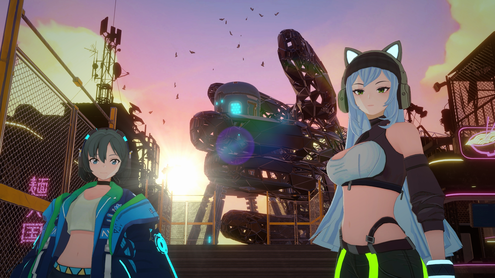
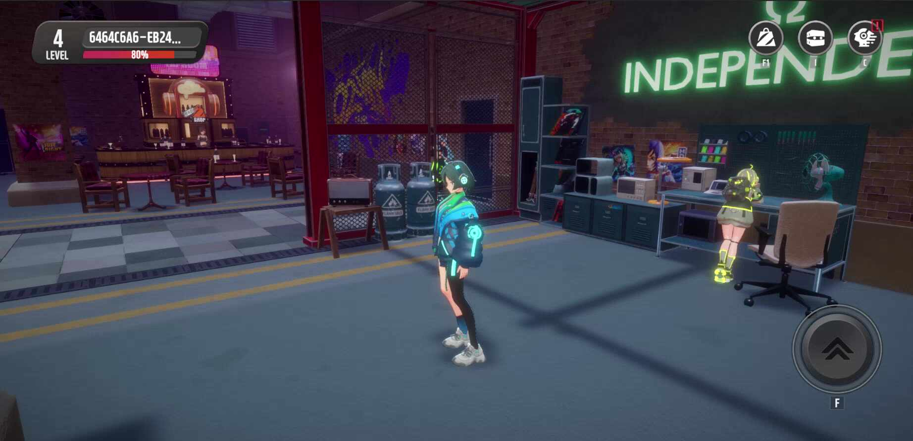

Project D
Unity 인게임 컷신과 로비 환경


프로젝트 소개
짧은 각성·스킬 장면을 Timeline으로 연출하고, 로비 환경과 전투 화면을 Unity에서 구성했습니다.
담당 업무
- Timeline 각성·스킬 컷신, 후처리·비주얼 조정
- Cinemachine 게임플레이 카메라, 이벤트 시퀀스·전환, 소개 영상 편집
- 프로토타입 로비의 환경 아트, 모듈러 에셋·타일링 텍스처·프랍·PBR 재질 제작
- 비주얼 목업 조명·카메라, 리뉴얼 데모의 상용 에셋 기반 로비 배치와 커스터마이징
기여 범위 및 사용 리소스
- 프로토타입 로비 제작과 상용 에셋 기반 리뉴얼은 서로 다른 작업 범위.
- 캐릭터·악기 모델, 원본 모션, 개별 VFX 및 UI의 제작 분담 미확인.
- 리뉴얼 화면 속 삽입 영상·대화 시스템의 제작 분담 미확인.
기술 및 툴
Gallery
인게임 각성·스킬 연출
악기와 손의 클로즈업, 전신 공개, 광원 변화를 활용해 짧은 플레이 이벤트에 강약을 만들었습니다.
직접 제작 로비와 리뉴얼
프로토타입의 모듈러 로비는 신규 제작 범위를, 공연장 리뉴얼은 상용 에셋 배치·조명·카메라 작업을 보여줍니다.


시간대 시안
같은 배치와 카메라에서 조명·후처리의 차이를 비교합니다.